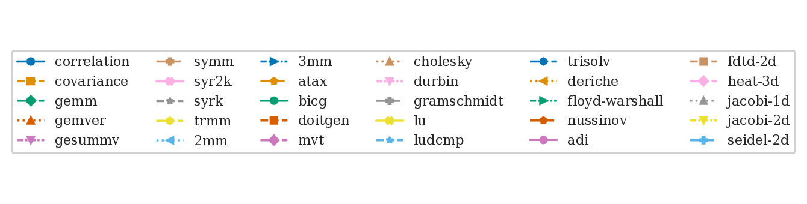
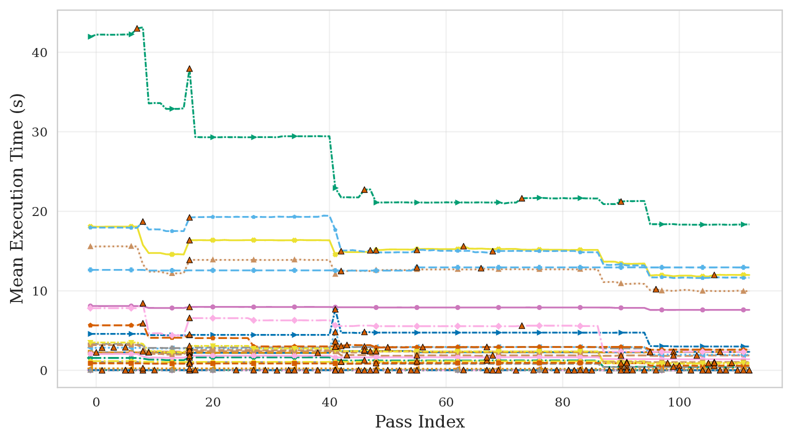
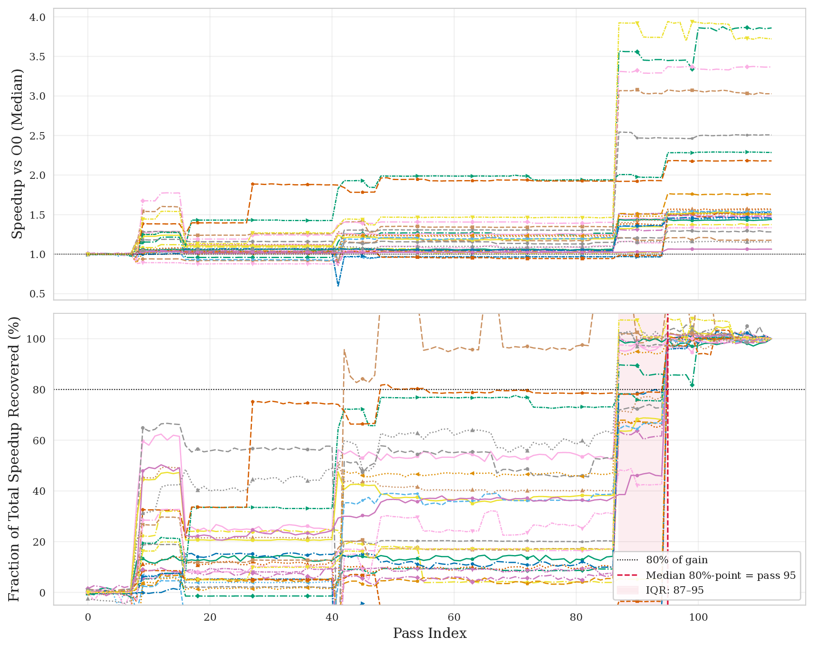
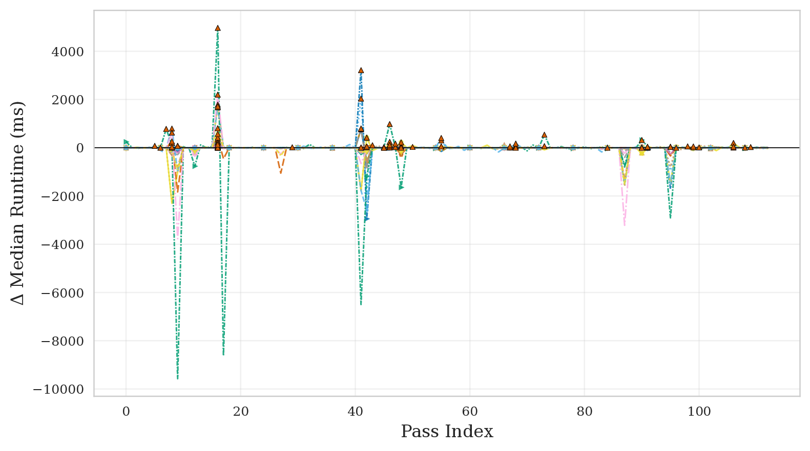
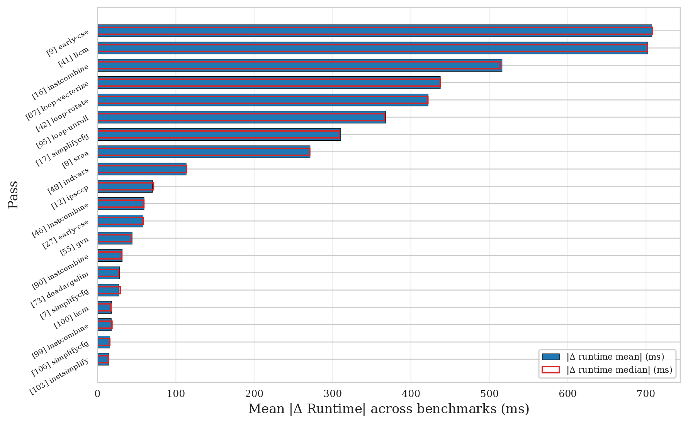
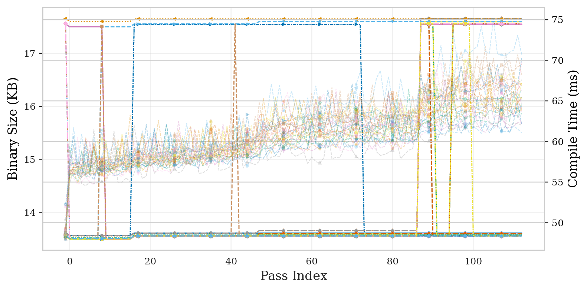
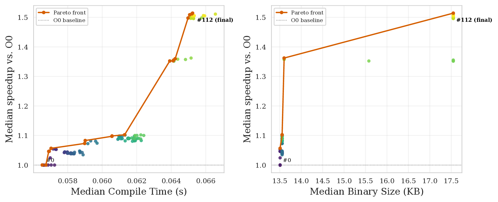
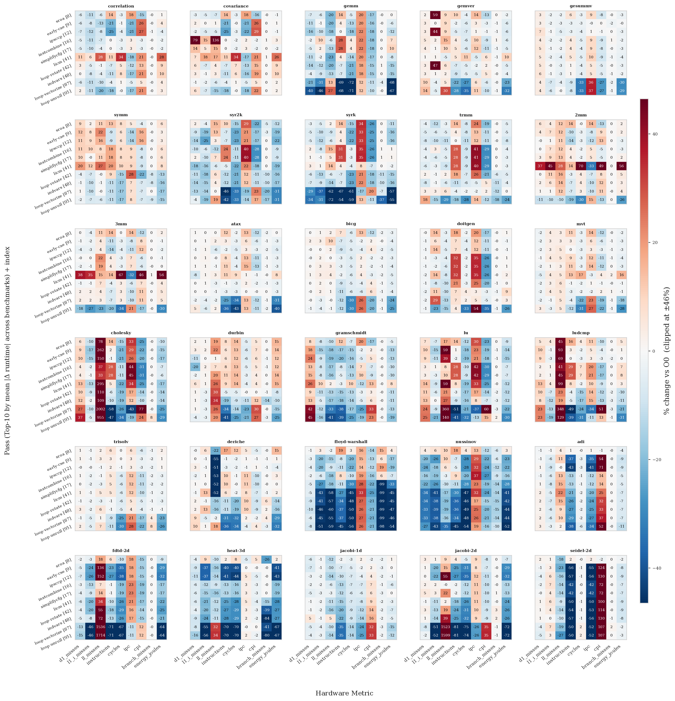
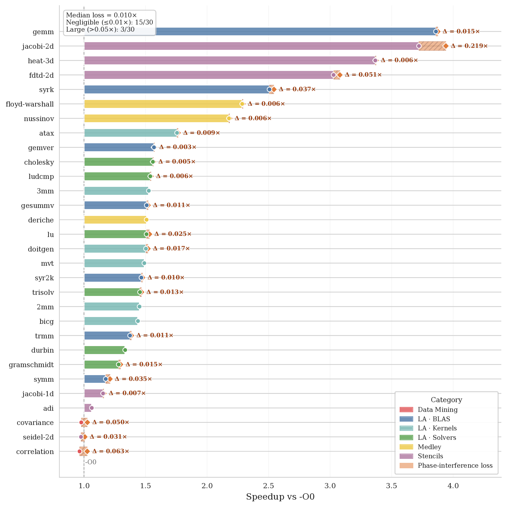

A Multi-Dimensional, Per-Pass Empirical Study of the LLVM Optimization Pipeline
A Multi-Dimensional, Per-Pass Empirical Study of the LLVM Optimization Pipeline
Hi Folks! We just posted a new preprint on arXiv: A Multi-Dimensional, Per-Pass Empirical Study of the LLVM Optimization Pipeline. This post is a quick, friendly tour of what we found.
Code and artifact
The tool we built to run all of this is llvm-passview — an open-source driver that automates the prefix-by-prefix compilation and measurement pipeline.
If you want to dig into the raw data, the full artifact lives at PAPER-ARTIFACT. For every benchmark, at every pipeline step, you get: the LLVM IR, the compiled binary, execution logs, and profiling CSVs for every metric (runtime, compile time, binary size, IPC, cache misses, energy, ...). That's a lot of data to play with. The exact 113-step pipeline decomposition is available here.
The question
You pass -O3 to clang and your code gets faster. Great.
But which of the 113 optimization passes that -O3 runs actually did something?
And did they all help, or did some of them secretly make things worse before another pass fixed it?
That's what we set out to answer. We ran every cumulative prefix of the -O3 pipeline — pass 0 only, then passes 0–1, then 0–2, ... up to all 113 — on 30 PolyBench/C kernels and measured execution time, compile time, binary size, hardware counters (IPC, cache misses, ...) and energy. That's 84,750 measurements in total, with careful noise mitigation.
All multi-benchmark figures below use the following legend — one unique color, marker, and line style per kernel:

Finding 1 — marginal impact of individual passes
The first surprise: -O3 is not monotonically improving. About 7–10% of pass-to-pass transitions actually slow things down before a later pass recovers. Here's what the runtime trajectory looks like across all 30 benchmarks:

Most of the speedup also comes late in the pipeline. The median benchmark needs to complete 84.8% of the pipeline before locking in 80% of its final speedup — driven by loop-vectorize (pass 87) and loop-unroll (pass 95). Three benchmarks (correlation, covariance, seidel-2d) end up slower than -O0 altogether.

Decomposing the trajectory into per-pass deltas reveals a clear 80/20 structure: a handful of passes dominate, and the long tail is essentially noise. early-cse, licm, instcombine, loop-vectorize, and loop-unroll carry most of the weight, while the bottom half of the pipeline is statistically indistinguishable from doing nothing.

Aggregating those deltas across all benchmarks gives a clean cross-benchmark ranking of who actually did the work:

early-cse takes the crown (27/30 benchmarks).Finding 2 — speed, compile time, and binary size trade-offs
Runtime improvements don't come for free. Compile time grows near-monotonically, while binary size is non-monotone: early passes shrink it via dead-code elimination, late inlining and unrolling inflate it. The result is that the final -O3 endpoint is Pareto-dominated in 29/30 benchmarks — there's an earlier pipeline checkpoint that is simultaneously smaller and faster. Also, static IR instruction count turns out to be a poor proxy for runtime: 27/30 benchmarks show a negative correlation between IR size and execution time, since passes like unrolling and vectorization expand the IR while reducing runtime.

Putting speedup and binary size together on a Pareto plot makes the dominated endpoint obvious:

Finding 3 — vectorization saves energy (not just time)
We also measured hardware counters and RAPL energy. A striking result: IPC (instructions per clock) actually falls by 17.4% end-to-end, even though execution is much faster. That sounds contradictory — but it makes sense once you realize vectorization (SIMD) replaces many cheap scalar instructions with fewer, wider, longer-latency ones. You're doing less work total, which wins, even if each individual operation takes longer per cycle. The heatmap below shows exactly which passes move which counters, across all 30 benchmarks:

On the energy side: passes that improve runtime are de facto energy passes too.
The suite-wide energy savings track runtime savings closely (30–60%), with the biggest single step at loop-vectorize (−35% in one pass).
To our knowledge, this is the first per-pass energy profile of the LLVM pipeline.
Finding 4 — how much speedup is lost to phase interference?
Given all those non-monotone transitions, one natural question is: how much potential speedup is the pipeline leaving on the table? We define a simple idealized upper bound: take the sum of all positive pass contributions, ignoring the regressions. The loss L measures the gap between that ceiling and what you actually get.

correlation (L=100%), -O3 ends up slower than -O0.
The mean loss is 46.35% (median 39.3%). The ceiling is unreachable — passes don't compose additively — but the number gives a concrete sense of how much intra-pipeline interference costs. On correlation (L=100%), licm at pass 41 drops performance by 26%, and the very next pass (loop-rotate) recovers most of it — the pipeline self-corrects in situ, but not fully. As far as we know, this is the first search-free, per-pass quantification of phase-interference loss in a production compiler's default pipeline.
So what?
A few practical takeaways:
- Pass pruning: if you're building a constrained compiler (embedded, compile-time budget), the bottom half of the pass list is essentially free to drop for these workloads.
- Cost models: IR instruction count is a poor proxy for runtime. 27/30 benchmarks show a negative correlation between IR size and execution time — more IR often means faster code (unrolling, vectorization).
- Autotuning: the per-pass data gives a dense supervision signal for learned phase ordering, without needing to search over orderings.
- Energy: if you're optimizing for power (mobile, HPC), just optimize for runtime — at least for compute-bound workloads, the two objectives align tightly.
The full paper is on arXiv: arxiv.org/abs/2606.31238. If you have thoughts or questions, feel free to reach out!
How to cite
@misc{Bruzzone26f-preprint,
title={A Multi-Dimensional, Per-Pass Empirical Study of the LLVM Optimization Pipeline},
author={Federico Bruzzone and Walter Cazzola},
year={2026},
eprint={2606.31238},
archivePrefix={arXiv},
primaryClass={cs.SE},
url={https://arxiv.org/abs/2606.31238},
}